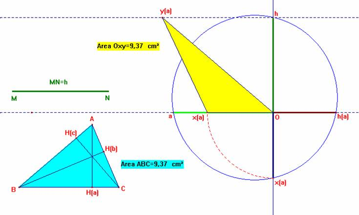

Problema 103
Transformar un triángulo dado en otro equivalente y de altura dada h.
Propuesto por el profesor Romero Márquez J.B., Colaborador de la Universidad de Valladolid.
Fourrey, E. (2001): Curiosités Géomètriques. Viubert. Paris (pag 268).
Solución de F. Damián Aranda Ballesteros profesor de Matemáticas del IES Blas Infante en Córdoba (5 de julio de 2003)
Sean dados el triángulo ABC y el segmento MN, como la altura h. De esta forma, se insta a transformar el anterior triángulo en otro equivalente y cuya altura sea ahora h.
En definitiva, si tenemos el triángulo ABC, consideramos uno cualquiera de sus lados y su altura correspondiente. Por ejemplo, a y ha.
Así la situación quedará reducida a la construcción del segmento cuarto proporcional a los segmentos a, ha y h.

Saludos de F. Damián Aranda Ballesteros.